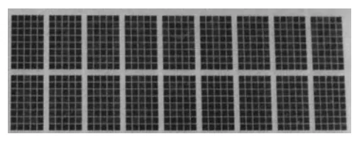
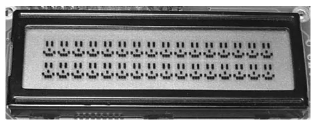

In addition to using the standard letters, numbers, and symbols available on your keyboard, you can define up to eight of your own characters in each sketch. Notice in the LCD module that each character is made up of eight rows of five dots, or pixels. Figure 7-6 shows a close-up.

To display your own characters, you must first define each one using an array. For example, to create a smiley face, you could use the following:
byte a[8] = { B00000,
B01010,
B01010,
B00000,
B00100,
B10001,
B01110,
B00000 };Each number in the array addresses an individual pixel in the display. A 0 turns off a pixel, and a 1 turns it on. The elements in the array represent the rows of pixels in the display; the top element is the top row, the next element is the second row down, and so on.
In this example, since the first element is B00000, all the pixels in the top row are turned off because we see only 0s. In the next element, B01010, every other pixel is turned on, and the 1s form the top of the eyes. Each row and pixel continues to fill out the characters.
Next, assign the array (which defines your new character) to the first of the eight custom character slots in void setup() with the following function:
lcd.createChar(0, a); // assign the array a[8] to custom character slot 0Finally, to display the character, add the following in void loop():
lcd.write(0);To display our custom character, we’d use the following code:
// Project 25 - Defining Custom Characters
#include <LiquidCrystal.h>
LiquidCrystal lcd(4, 5, 6, 7, 8, 9); // pins for RS, E, DB4, DB5, DB6, DB7
byte a[8] = { B00000,
B01010,
B01010,
B00000,
B00100,
B10001,
B01110,
B00000 };
void setup()
{
lcd.begin(16, 2);
lcd.createChar(0, a);
}
void loop()
{
lcd.write(0); // write the custom character 0 to the next cursor position
}Figure 7-7 shows the smiley faces displayed on the LCD screen.

Character LCD modules are simple to use and somewhat versatile. For example, using what you’ve learned, you could create a detailed digital thermometer by combining this LCD and the temperature-measurement part of Project 20. However, if you need to display a lot of data or graphical items, you will need to use a graphic LCD module.